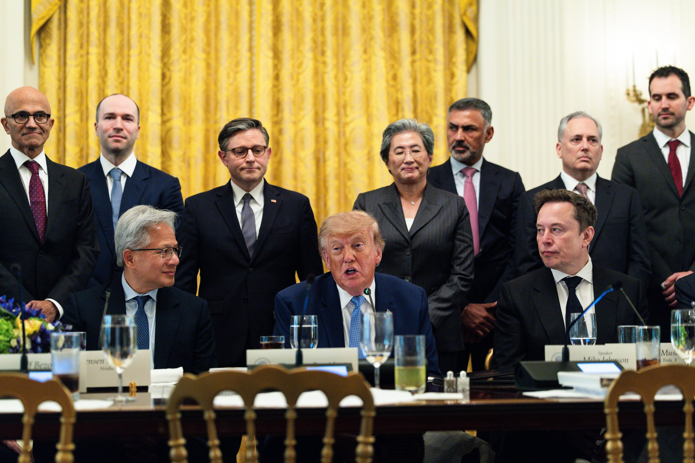

Трамп несколько недель назад взялся переименовать «искусственный интеллект» в «super intelligence» («суперразум»): указ обязал государственные агентства США использовать новый термин, а в соцсети президент написал, что Белый дом считает «врагом» каждого, кто по-прежнему говорит «ИИ». Большинство людей по обе сторону океана продолжают говорить как говорили, но самые влиятельные tech-компании, как отмечает The Verge, начали подстраиваться.
Илон Маск одним из первых подхватил новую моду и пообещал переименовать SpaceXAI в SpaceXSI. Марк Бениофф через считаные часы после «вражеского» поста перевыпустил платформу AIForce от Salesforce под именем SIForce. Nvidia объявила о вложении миллиарда долларов в науку, назвав часть инициативы «исследования суперразума». Самый свежий пример — Сатья Наделла: вчерашний пост Microsoft с призывом строить «аварийный тормоз» для ИИ изобилует термином super intelligence.
Все перечисленные руководители — Маск, Хуанг, Цукерберг, Пичаи, Безос, Амодеи, Наделла — были на саммите, где подписывали добровольный «аккорд» с администрацией, и The Verge без обиняков объясняет подтекст: бизнесу есть что потерять, если Белый дом запомнит неподобающий лексикон. Хуанг тем временем пошёл дальше и публично заявил, что угрозы ИИ преувеличены.
Отдельного официального анонса именно о переименовании ИИ ни одна из компаний не выпускала: всё держится на постах в X и заявлениях с мероприятий. При этом ни одна лаборатория не тронула названия самих моделей — «суперразум» пока существует только как знак лояльности, а не как продуктовая линейка.